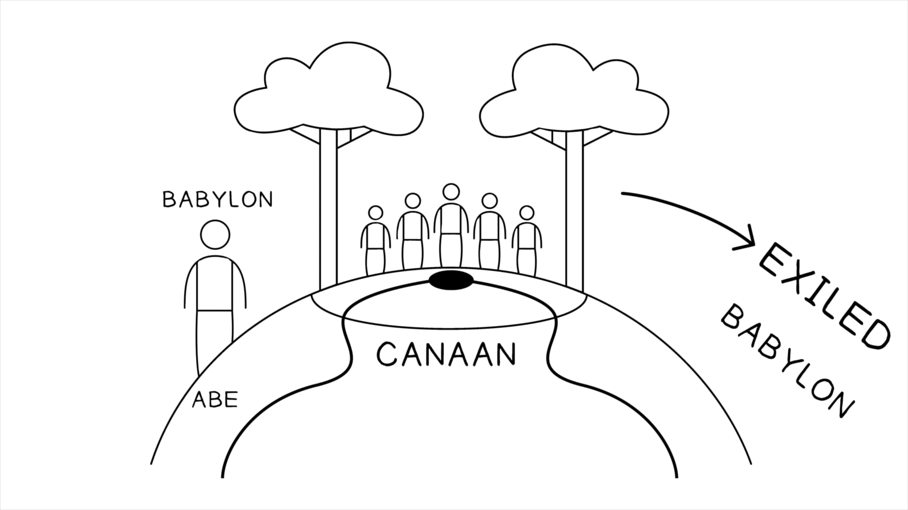

Como sacerdote, Ezequiel teria sido proibido de contato com cadáveres e ossos, mas Yahweh lhe dá um tour completo de um vale cheio de ossos (37:1-2). A pergunta (37:3) beira ao farsesco: “Podem estes ossos viver?” Ezequiel conhece Yahweh como criador de toda a vida, e certamente conhece as raras histórias de Yahweh revivendo os mortos recentes (1 Rs 17:17-24; 2 Rs 4:18-37), mas ressuscitar e recriar novos humanos a partir de ossos antigos e espalhados está além de sua compreensão.As a priest, Ezekiel would have been prohibited from contact with corpses and bones, but Yahweh gives him a thorough tour of a bone-littered valley (37:1-2). The question (37:3) borders on farce: “Can these bones live?” Ezekiel knows Yahweh as creator of all life, and he surely knows the rare stories of Yahweh reviving the recently dead (1 Kgs. 17:17-24; 2 Kgs. 4:18-37), but to resurrect and re-create new humans out of age-old scattered bones is beyond his comprehension.
Ezequiel 37:5-10 é uma cena notável com claros ecos de Gênesis 2:7. A nova vida destes ossos há muito mortos não será outra coisa senão um ato de nova criação, e o papel proeminente do “espírito” de Deus (ruakh, usado em todas as suas nuanças de “espírito, vento, sopro”) remete à promessa de Ezequiel 36:26-27.Ezekiel 37:5-10 is a remarkable scene with clear echoes of Genesis 2:7. The new life of these long dead bones will be nothing other than an act of new creation, and the prominent role of God’s “spirit” (ruakh, used in all of its nuances of “spirit, wind, breath”) links back to the promise of Ezekiel 36:26-27.
Em Ezequiel 37:11, Jerusalém caiu, o seu povo foi exilado na Babilônia por quem sabe quanto tempo, e a esperança dos exilados se desvaneceu e o desespero se instalou. A única esperança que Israel tem para futura relação de aliança com Yahweh será o seu poder criador de vida para ressuscitar completamente a nação do “sepulcro” (= exílio na Babilônia) para nova vida na terra prometida (Ez 37:12-14).In Ezekiel 37:11, Jerusalem has fallen, its people have been exiled in Babylon for who knows how long, and the hope of the exiles has vanished and despair has set in. The only hope Israel has for future covenant relationship with Yahweh will be his life-creating power to completely resurrect the nation from “the grave” (= exile in Babylon) to new life in the promised land (Ezek. 37:12-14).
A Bíblia Hebraica contém muitas afirmações de que Yahweh não compete com os deuses do submundo (Moloque, etc.), e ele sozinho é o Deus dos vivos e dos mortos (Dt 32:39; 1 Sm 2:6; Sl 104:29-30). Os Salmos contêm várias expressões esperançosas de que a fidelidade de Yahweh deve se estender além da sepultura (Sl 16:10, 49:15, 73:23-26). Outros profetas retomam esta imagética e usam “morte” como imagem para exílio e “ressurreição” como imagem para restauração nacional e de aliança (Os 6:1-3, 13:14). O uso de imagética de ressurreição por Ezequiel é simbólico de restauração nacional e de aliança (ver 37:13). Mas este capítulo é um elo-chave no desenvolvimento da ideia de que a restauração de Israel para cumprir as promessas a Abraão necessitaria de algo como uma ressurreição real dos mortos para Israel primeiro, depois toda a humanidade: Isaías 25:7-8, 26:19, e Daniel 12:1-3.The Hebrew Bible contains many affirmations that Yahweh is not in competition with the gods of the underworld (Molech, etc.), and he alone is the God of the living and the dead (Deut. 32:39; 1 Sam. 2:6; Ps. 104:29-30). The Psalms contain a number of hopeful expressions that Yahweh’s faithfulness must extend beyond the grave (Ps. 16:10, 49:15, 73:23-26). Other prophets pick up this imagery and use “death” as an image for exile and “resurrection” as an image for national and covenantal restoration (Hos. 6:1-3, 13:14). Ezekiel’s use of resurrection imagery is symbolic of national and covenantal restoration (see 37:13). But this chapter is a key link in the development of the idea that Israel’s restoration to fulfill the promises to Abraham would necessitate something like an actual resurrection of the dead for Israel first, then all humanity: Isaiah 25:7-8, 26:19, and Daniel 12:1-3.

Como a história do Éden molda a imaginação profética sobre exílio e restauração?How does the Eden story shape the prophetic imagination about exile and restoration?